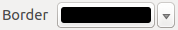

.
Outils généraux¶
Raccourcis clavier¶
KADAS fournit des raccourcis claviers par défaut pour de nombreuses fonctionnalités. Vous les trouverez dans la section Barre de Menu. Le sous-menu Préférences ‣ Configurer les raccourcis... permet de personnaliser ces raccourcis clavier et d’en définir pour les autres fonctionnalités de KADAS listées.
Figure Shortcuts 1:

Définir les options des raccourcis  (Gnome)
(Gnome)
La configuration est très simple. Sélectionnez une action dans la liste et cliquez sur le bouton [Changement], [Ne rien mettre] ou [Définir par défaut]. Lorsque vous avez terminé, vous pouvez sauver la configuration dans un fichier XML en vue de charger ce dernier dans un autre environnement d’exécution de KADAS (sur un autre ordinateur par exemple).
Aide contextuelle¶
Lorsque vous avez besoin d’aide sur un sujet spécifique, vous pouvez accéder à l’aide contextuelle via le bouton [Aide] disponible dans la plupart des fenêtres — notez que les extensions additionnelles peuvent pointer vers des pages web dédiées.
Rendu¶
Par défaut, KADAS effectue le rendu de toutes les couches visibles à chaque fois que l’affichage de la carte est mis à jour. Les événements qui déclenchent ce rafraîchissement sont :
l’ajout d’une couche
le déplacement ou le zoom
Redimensionnement de la fenêtre de KADAS
la modification de la visibilité d’une ou plusieurs couches
KADAS vous laisse contrôler le processus de rendu de plusieurs manières.
Rendu dépendant de l’échelle¶
Le rendu dépendant de l’échelle permet de spécifier des échelles minimale et maximale auxquelles la couche doit être visible. Pour définir une échelle de rendu, ouvrez la fenêtre de Propriétés en double-cliquant sur une couche dans la légende et dans l’onglet Général, cochez la case  Visibilité dépendante de l’échelle puis saisissez les valeurs voulues.
Visibilité dépendante de l’échelle puis saisissez les valeurs voulues.
Vous pouvez déterminer les valeurs d’échelle en zoomant au niveau que vous voulez utiliser et en notant les valeurs de la barre d’état de KADAS.
Contrôler le rendu¶
Le rendu de la carte peut être contrôlé de différentes manières, décrites ci-dessous.
Suspendre le rendu¶
Pour suspendre le rendu, cliquez sur la case Rendu dans le coin inférieur droit de la barre de statut. Quand cette case n’est pas cochée, KADAS ne redessine pas la carte en réponse aux événements décrits dans la section Rendu. Voici quelques cas pour lesquels vous pourriez souhaiter ce comportement :
Ajouter plusieurs couches et réaliser leur symbologie avant de les afficher
Ajouter une ou plusieurs couches et définir leur dépendance d’échelle avant de les afficher
Ajouter une ou plusieurs couches et zoomer à une vue spécifique avant de les afficher
N’importe quelle combinaison des éléments précédents
Cocher la case Rendu activera de nouveau le rendu et provoquera un rafraîchissement immédiat de la carte.
Définir les options d’ajout de couche¶
Il est possible de définir une option qui chargera toutes les nouvelles couches sans les dessiner, elles seront ajoutées à la carte, mais la case de visibilité sera décochée par défaut. Pour définir cette option, sélectionnez l’option Préférences ‣ Options et cliquez sur l’onglet Rendu. Décochez la case Par défaut les couches supplémentaires sont affichées. Les nouvelles couches ajoutées à la carte seront invisibles par défaut.
Arrêter le rendu¶
Pour arrêter le rendu de la carte, appuyez sur la touche ESC. Ceci stoppera le rafraîchissement de la vue de la carte et laissera la carte partiellement dessinée. Il est possible qu’il y ait un délai entre le moment où la touche est pressée et le moment où le rendu de la carte est effectivement arrêté.
Note
Il n’est maintenant plus possible d’arrêter le rendu — cela a été désactivé dans Qt4 à cause de problèmes et de crashes dans l’interface utilisateur (IHM).
Mettre à jour l’affichage de la carte pendant le rendu de l’affichage¶
Vous pouvez définir une option pour mettre à jour l’affichage de la carte quand des entités sont dessinées. Par défaut, KADAS n’affiche pas les entités d’une couche tant que la couche n’a pas été rendue entièrement. Pour mettre à jour l’affichage à mesure que les entités sont lues dans la table attributaire, sélectionnez le menu Préférences ‣ Options puis l’onglet Rendu. Mettez comme valeur le nombre d’entités à mettre à jour durant le rendu. Si elle est égale à 0, cela désactive la mise à jour durant le dessin (c’est la valeur par défaut). Une valeur trop basse risque d’impacter les performances, car la vue de la carte sera constamment mise à jour durant la lecture des entités. Il est suggéré de commencer à 500.
Influencer la qualité du rendu¶
Pour influencer la qualité du rendu de la carte vous avez deux possibilités. Dans le menu Préférences ‣ Options puis l’onglet Rendu et sélectionnez ou désélectionnez les cases suivantes :
- Les lignes semblent moins déchiquetées aux dépens d’une certaine vitesse d’exécution
- Corriger les polygones remplis de manière erronée
Accéler le rendu¶
Il y a deux manières d’améliorer la rapidité du rendu de la carte. Dans le menu Préférences ‣ Options puis onglet Rendu, sélectionnez ou désélectionnez les cases suivantes :
- Activer la mémoire tampon d’arrière-plan. Elle offre de meilleures performances graphiques au détriment de la possibilité d’annuler le rendu et l’affichage des entités au fur et à mesure qu’elles sont lues dans la table. Si cette option est décochée, vous pouvez définir un Nombre d’entités à afficher avant d’actualiser l’affichage, sinon, ceci est désactivé.
- Utiliser le cache du rendu si possible pour accélérer l’affichage
Mesurer¶
Les mesures fonctionnent uniquement au sein des systèmes de coordonnées projetées (par exemple : UTM, Lambert 93) et pour les données sans système de coordonnées. Si la couche active est définie par un système de coordonnées géographiques (latitude/longitude), les résultats d’une mesure de ligne ou d’aires seront incorrects. Pour y remédier, vous devez spécifier un système de coordonnées plus approprié (voir section Utiliser les projections). Les outils de mesure utilisent les paramètres d’accrochage de l’outil de numérisation. C’est utile pour mesurer des distances et des aires pour des couches vectorielles.
Pour choisir un outil de mesure, cliquez sur  et sélectionnez l’outil que vous souhaitez utiliser.
et sélectionnez l’outil que vous souhaitez utiliser.
Mesurer des longueurs, des aires et des angles¶
Mesurer une longueur : KADAS peut mesurer des distances réelles entre des points donnés selon un ellipsoïde défini. Pour le configurer, allez dans le menu Préférences ‣ Options puis dans l’onglet Outils cartographiques et sélectionnez l’ellipsoïde approprié. Vous pouvez également modifier ici la couleur du trait, votre unité de mesure (mètre ou pied) et unité d’angle (degrés, radians ou grades) préférées. L’outil vous permet alors de placer des points sur la carte. La longueur de chaque segment s’affiche dans la fenêtre de mesure ainsi que la longueur cumulée totale. Pour stopper les mesures, faites un clic droit. Notez que vous pouvez interactivement changer les unités de mesures dans la boîte de dialogue de mesures. Elles remplacent alors les Unités de mesures préférées des options. Il y a une section information dans la boîte de dialogue qui affiche les paramètres du SCR qui sont utilisés lors des calculs de mesure.
Figure Measure 1:
Mesure de distance (Gnome)
 Mesurer une aire : les aires peuvent aussi être mesurées. Dans la fenêtre de mesure la surface totale mesurée apparaît. En complément, l’outil de mesure s’accrochera à la couche sélectionnée à partir du moment où celle-ci a un seuil d’accrochage défini (voir section snapping_tolerance). Donc si vous voulez mesurer avec exactitude le long d’une ligne ou autour d’un polygone, spécifiez d’abord un seuil d’accrochage puis sélectionnez la couche. Avec l’outil de mesure, chaque clic de souris (se situant dans ce seuil de tolérance) s’accrochera aux entités de cette couche.
Mesurer une aire : les aires peuvent aussi être mesurées. Dans la fenêtre de mesure la surface totale mesurée apparaît. En complément, l’outil de mesure s’accrochera à la couche sélectionnée à partir du moment où celle-ci a un seuil d’accrochage défini (voir section snapping_tolerance). Donc si vous voulez mesurer avec exactitude le long d’une ligne ou autour d’un polygone, spécifiez d’abord un seuil d’accrochage puis sélectionnez la couche. Avec l’outil de mesure, chaque clic de souris (se situant dans ce seuil de tolérance) s’accrochera aux entités de cette couche.
Figure Measure 2:

Mesure d’aire (Gnome)
 Mesurer un angle : vous pouvez aussi mesurer des angles. Le curseur adopte une forme en croix. Cliquez pour dessiner le premier côté de l’angle à mesurer puis bougez le curseur pour dessiner l’angle désiré. La mesure est affichée dans une fenêtre.
Mesurer un angle : vous pouvez aussi mesurer des angles. Le curseur adopte une forme en croix. Cliquez pour dessiner le premier côté de l’angle à mesurer puis bougez le curseur pour dessiner l’angle désiré. La mesure est affichée dans une fenêtre.
Figure Measure 3:

Mesure d’angle (Gnome)
Sélectionner et désélectionner des entités¶
La barre d’outils KADAS fournit plusieurs outils de sélection d’entités à partir du canevas de la carte. Pour sélectionner une ou plusieurs entités, cliquez sur  et choisissez votre outil :
et choisissez votre outil :
- Sélection d’entités
 Sélection d’entités avec un rectangle
Sélection d’entités avec un rectangle Sélection d’entités avec un polygone
Sélection d’entités avec un polygone Sélection d’entités à main levée
Sélection d’entités à main levée Sélection d’entités selon un rayon
Sélection d’entités selon un rayon
Pour désélectionner toutes les entités, cliquez sur  Désélectionner toutes les entités.
Désélectionner toutes les entités.
 Sélectionner une entité en utilisant une expression permet à l’utilisateur de sélectionner une entité en utilisant la boîte de dialogue des expressions. Consultez le chapitre Expressions pour des exemples.
Sélectionner une entité en utilisant une expression permet à l’utilisateur de sélectionner une entité en utilisant la boîte de dialogue des expressions. Consultez le chapitre Expressions pour des exemples.
Les utilisateurs peuvent sauvegarder les entités sélectionnées dans une Nouvelle Couche Vecteur en Mémoire ou dans une Nouvelle Couche Vecteur en utilisant Édition ‣ Coller les entités en tant que ... et choisir le mode désiré.
Identifier les entités¶
L’outil Identifier les entités vous permet d’interagir avec le canevas de la carte et d’afficher des informations sur les entités dans un menu contextuel. Pour identifier une entité, utilisez Vue ‣ Identifier les entités ou Ctrl + Shift + I ou encore cliquez sur l’icône  Identifier les entités dans la barre d’outils.
Identifier les entités dans la barre d’outils.
Si vous cliquez sur plusieurs entités, la boîte de dialogue Identifier les résultats listera les informations relatives à toutes les entités sélectionnées. Le premier élément correspond au numéro de la couche dans la liste des résultats, suivi du nom de la couche. Puis, son premier élément sera le nom d’un champ et sa valeur. Le premier champ est celui sélectionné dans Propriétés ‣ Affichage. Enfin, toutes les informations des entités sont affichées.
Cette fenêtre se personnalise pour afficher les champs choisis mais par défaut, trois types d’information sont affichés :
Actions : il est possible de lancer des actions depuis la fenêtre d’identification. Une action se lance en cliquant sur son nom. Par défaut, seule une action est présente et permet d’afficher le formulaire de l’entité.
Dérivé : ces informations sont calculées ou dérivées d’autres informations. Vous y trouverez les coordonnées du point cliqué, les coordonnées X et Y pour un point, l’aire et le périmètre dans les unités de la carte pour un polygone, la longueur dans les unités de la carte pour une ligne et l’identifiant de l’entité.
Données attributaires : il s’agit de la liste des champs attributaires de la donnée.
Figure Identify 1:

Fenêtre d’identification des entités (Gnome)
En haut de la fenêtre, vous avez cinq icônes :


{kind=link}
En bas de la fenêtre, vous avez deux listes déroulantes Mode et Vue. Avec la liste Mode vous pouvez définir le mode d’identification : ‘Couche actuelle’, ‘De haut en bas, s’arrêter à la première’, ‘De haut en bas’ et ‘Choix de la couche’. La liste Vue peut être défini avec ‘Arbre’, ‘Table’ ou ‘Graphique’.
L’outil d’identification permet d’ouvrir automatiquement le formulaire. Dans ce mode, vous pouvez modifier les attributs des objets.
D’autres fonctions peuvent être trouvées dans le menu contextuel d’un élément identifié, via un clic droit. Par exemple, depuis le menu contextuel, vous pouvez :
Voir le formulaire d’entité
Zoomer sur l’entité
Copier l’entité : copie toute la géométrie et les attributs d’une entité
Activer la sélection d’entités: ajoute les entités identifiées à la sélection
Copier les valeurs d’attributs : copie uniquement les valeurs d’attributs de l’entité identifiée
Copier les attributs des entités : copie uniquement les valeurs d’attributs
Lâcher les résultats : la fenêtre de résultats est vidée
Masquer la surbrillance : la surbrillance des entités identifiées sur la carte est retirée
Tout mettre en surbrillance
Mettre la couche en surbrillance
Activer une couche : Choisir la couche à activer
Propriétés : ouvre la fenêtre des propriétés de la couche
Tout déplier
Tout replier
Décorations¶
Les éléments de décorations dans KADAS incluent l’étiquette de Copyright, la flèche du nord et la barre d’échelle. Ils s’utilisent pour ‘décorer’ la carte.
Grille¶
 Grille vous permet d’ajouter un graticule et des coordonnées à la carte.
Grille vous permet d’ajouter un graticule et des coordonnées à la carte.
Figure Decorations 1:

La fenêtre Grille
Sélectionnez via le menu Vue ‣ Décorations ‣ Grille. La fenêtre s’affiche (voir figure_decorations_1).
Cochez la case
Activer la grille et définissez les paramètres de la grille en fonction des couches chargées dans le canevas de carte.Cochez la case
Dessiner une annotation et définissez les propriétés de l’annotation en fonction des couches chargées dans le canevas de carte.Cliquez sur [Appliquer] pour vérifier si le rendu est celui escompté.
Cliquez sur le bouton [OK] pour appliquer et fermer la fenêtre.
Étiquette de Copyright¶
 Étiquette de Copyright ajoute une zone de texte permettant de spécifier le Copyright de la carte.
Étiquette de Copyright ajoute une zone de texte permettant de spécifier le Copyright de la carte.
Figure Decorations 2:

La fenêtre de Copyright
Sélectionnez via le menu Vue ‣ Décorations ‣ Étiquette de Copyright. La fenêtre s’affiche (voir figure_decorations_2).
Entrez le texte que vous souhaitez afficher sur la carte. Vous pouvez utiliser du code HTML comme le montre l’exemple.
Choisissez l’emplacement de l’étiquette dans la liste déroulante Position.
Assurez-vous que la case
Activer l’étiquette des droits d’auteur est cochée.Cliquez sur le bouton [OK].
Dans l’exemple ci-dessus, proposé par défaut, KADAS place un symbole de copyright suivi de la date dans le coin inférieur droit de la carte.
Flèche du nord¶
Flèche du nord place une simple flèche sur la carte. Pour le moment, seul un style de flèche est disponible. Vous pouvez modifier l’angle de la flèche ou laisser KADAS définir la direction automatiquement. Si vous choisissez cette dernière option, KADAS fait au mieux. Quatre options sont disponibles concernant l’emplacement, correspondant aux quatre coins de la carte.
{kind=link}
Figure Decorations 3:
La fenêtre de flèche du nord
Échelle graphique¶
 Échelle graphique ajoute une simple barre d’échelle sur la carte. Vous choisissez le style, l’emplacement ainsi que les étiquettes de la barre.
Échelle graphique ajoute une simple barre d’échelle sur la carte. Vous choisissez le style, l’emplacement ainsi que les étiquettes de la barre.
Figure Decorations 4:

La fenêtre de barre d’échelle
KADAS permet uniquement d’afficher l’échelle dans la même unité que celle de la carte. Donc, si l’unité est le mètre, vous ne pouvez créer une échelle en pieds. De la même manière, si vous utilisez les degrés décimaux, vous ne pouvez afficher une échelle en mètres.
Pour ajouter une échelle graphique :
Sélectionnez le menu Vue ‣ Décorations ‣ Échelle graphique. Une fenêtre s’affiche (voir figure_decorations_4).
Choisissez l’emplacement dans la liste déroulante Emplacement
 .
.Choisissez le style dans la liste déroulante Style de la barre d’échelle
.Sélectionnez la couleur dans Couleur de la barre  ou laissez le noir défini par défaut.
Définissez la taille de la barre et son étiquette dans Taille de la barre
 .
.Assurez-vous que la case
Activer l’échelle graphique est cochée.En option, vous pouvez cocher
Arrondir automatiquement lors du changement de zoom.Cliquez sur le bouton [OK].
Astuce
Paramètre des décorations
Lorsque vous sauvegardez un projet .qgs, toutes modifications faites sur le Carroyage, la Flèche du Nord, la Barre d’Échelle et le Copyright seront sauvées dans le fichier de projet et restaurées à la prochaine ouverture du projet.
Outils d’annotation¶
L’outil  Annotation de texte de la barre d’outils Attributs offre la possibilité de placer du texte formaté dans des bulles sur la carte. Sélectionnez l’outil Annotation de texte puis cliquez sur la carte.
Annotation de texte de la barre d’outils Attributs offre la possibilité de placer du texte formaté dans des bulles sur la carte. Sélectionnez l’outil Annotation de texte puis cliquez sur la carte.
Figure annotation 1:
La fenêtre d’annotation de texte
Un double clic sur l’annotation ouvre une fenêtre avec diverses options. Il y a un éditeur de texte pour entrer du texte formaté et d’autres options notamment la possibilité de figer la position de l’annotation dans la carte (montré par un symbole de marqueur) ou d’avoir la position de l’annotation relativement à l’écran (non liée à la carte). La position de l’élément peut être déplacé sur la carte (en déplaçant le marqueur de carte) ou en déplaçant seulement la bulle. Les icônes font partie du thème SIG et sont utilisées par défaut dans les autres thèmes, aussi.
L’outil  Déplacer une annotation vous permet de déplacer l’annotation sélectionnée sur la carte.
Déplacer une annotation vous permet de déplacer l’annotation sélectionnée sur la carte.
Annotations HTML¶
L’outil Annotation HTML de la barre d’outils Attributs offre la possibilité de placer le contenu d’un fichier html dans une bulle dans le canevas de carte de KADAS. Pour cela, sélectionnez l’outil Annotation HTML, cliquez quelque part dans la carte et ajoutez le chemin vers le fichier html dans la boîte de dialogue.
{kind=link}
Annotations SVG¶
L’outil  Annotation SVG de la barre d’outils Attributs offre la possibilité de placer un symbole SVG dans une bulle sur la carte. Pour cela, sélectionnez l’outil Annotation SVG, cliquez quelque part dans la carte et ajoutez le chemin vers le fichier SVG dans la boîte de dialogue.
Annotation SVG de la barre d’outils Attributs offre la possibilité de placer un symbole SVG dans une bulle sur la carte. Pour cela, sélectionnez l’outil Annotation SVG, cliquez quelque part dans la carte et ajoutez le chemin vers le fichier SVG dans la boîte de dialogue.
Formulaire d’annotation¶
En outre, vous pouvez créer vos propres formulaires d’annotation. L’outil Formulaire d’annotation est utile pour afficher les attributs d’une entité dans un formulaire personnalisé via Qt Designer (voir figure_custom_annotation). L’approche est similaire à la conception de formulaires pour l’outil Identifier les entités, mais elle affiche les informations sous la forme d’une annotation. Pour un complément d’information, regardez cette vidéo de Tim Sutton https://www.youtube.com/watch?v=0pDBuSbQ02o.
Figure annotation 2:

Le formulaire d’annotations qt personnalisé
Note
Si vous pressez les touches Ctrl+T alors que l’outil Annotation est activé (déplacement d’annotation, annotation de texte ou formulaire d’annotation), les annotations sont automatiquement cachées ou, inversement, rendues visibles.
Signets spatiaux¶
Les signets spatiaux vous permettent de marquer une zone de la carte pour y retourner plus tard.
Créer un signet¶
Pour créer un signet :
Déplacez-vous sur la zone concernée.
Sélectionnez le menu Vue ‣ Nouveau signet... ou appuyez sur les touches Ctrl-B.
Entrez un nom pour décrire le signet (jusqu’à 255 caractères).
Appuyez sur Entrée pour ajouter le signet ou sur [Annuler] pour sortir de la fenêtre sans l’enregistrer.
Notez que vous pouvez avoir plusieurs signets portant le même nom.
Travailler avec les signets¶
Pour utiliser ou gérer les signets allez dans le menu Vue ‣ Montrer les signets. La fenêtre Signets géospatiaux vous permet de rappeler ou d’effacer un signet. Vous ne pouvez pas modifier le nom d’un signet ou ses coordonnées.
Zoomer sur un signet¶
Depuis la fenêtre Signets géospatiaux, sélectionnez le signet voulu en cliquant dessus puis sur le bouton [Zoomer sur]. Vous pouvez aussi zoomer en opérant un double-clic.
Effacer un signet¶
Pour effacer un signet depuis la fenêtre Signets géospatiaux, cliquez dessus puis sur le bouton [Effacer]. Confirmez votre choix en cliquant sur [Oui] ou annulez en cliquant sur [Non].
Importer ou exporter les signets¶
Pour partager ou transférer vos signets entre ordinateurs vous pouvez utiliser le menu déroulant Partager dans la boîte de dialogue Signets Géospatiaux.
Inclusion de projets¶
Si vous souhaitez inclure dans votre projet QGIS des couches ou des groupes de couches issus d’un autre projet, utilisez le menu Couches ‣ Intégrer des couches et des groupes.
Intégrer des couches¶
La fenêtre suivante vous permet d’intégrer des couches provenant d’autres projets QGIS :
Cliquez sur
 pour rechercher un autre projet dans le jeu de données Alaska.
pour rechercher un autre projet dans le jeu de données Alaska.Sélectionnez le fichier de projet grassland. Vous en visualisez le contenu (voir figure_embed_dialog).
Maintenez la touche Ctrl et sélectionnez les couches grassland et regions. Appuyez sur [OK]. Ces couches sont maintenant intégrées à la légende de carte et à la vue carte.
Figure Nesting 1:

Sélection des couches et des groupes à intégrer
Bien que les couches intégrées soient éditables, vous ne pouvez pas en modifier le style et l’étiquetage.
Supprimer des couches intégrées¶
Faites un clic-droit sur la couche intégrée et sélectionnez  Supprimer.
Supprimer.